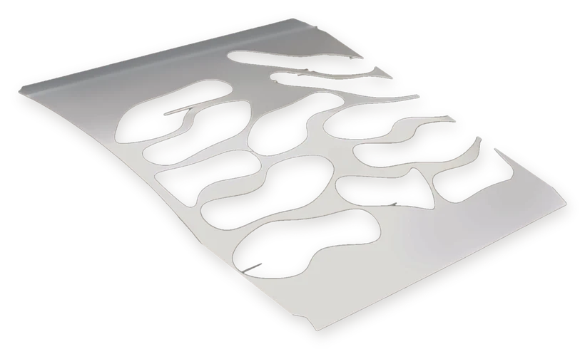
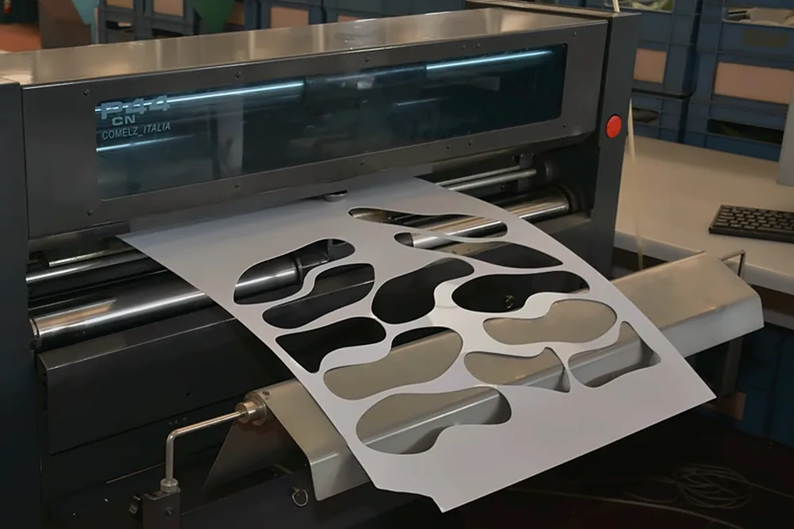
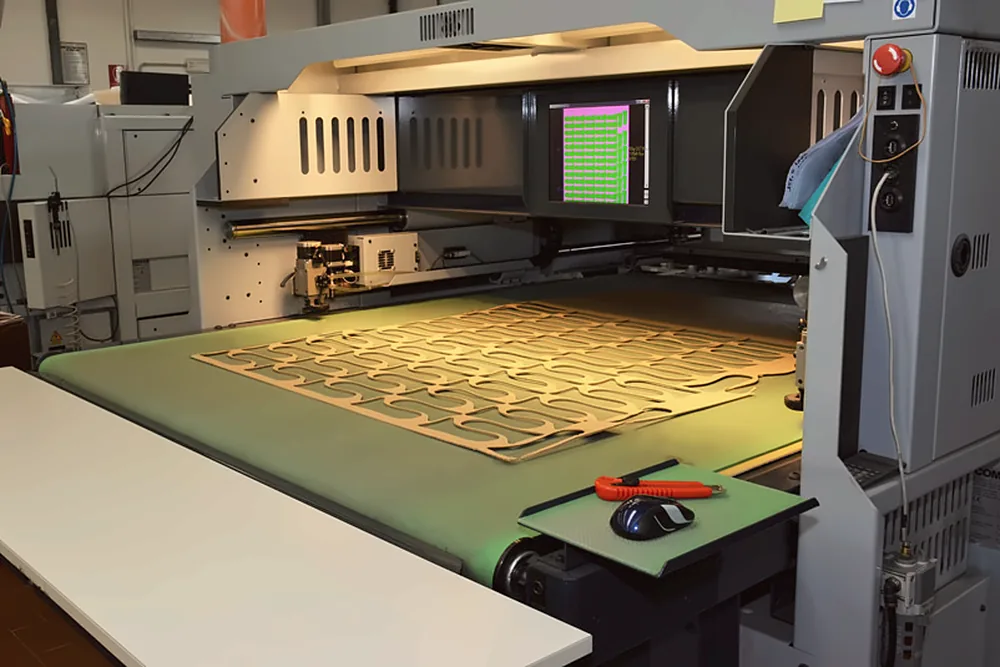
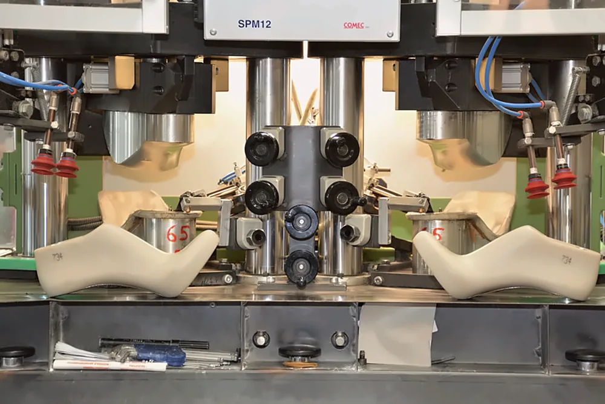
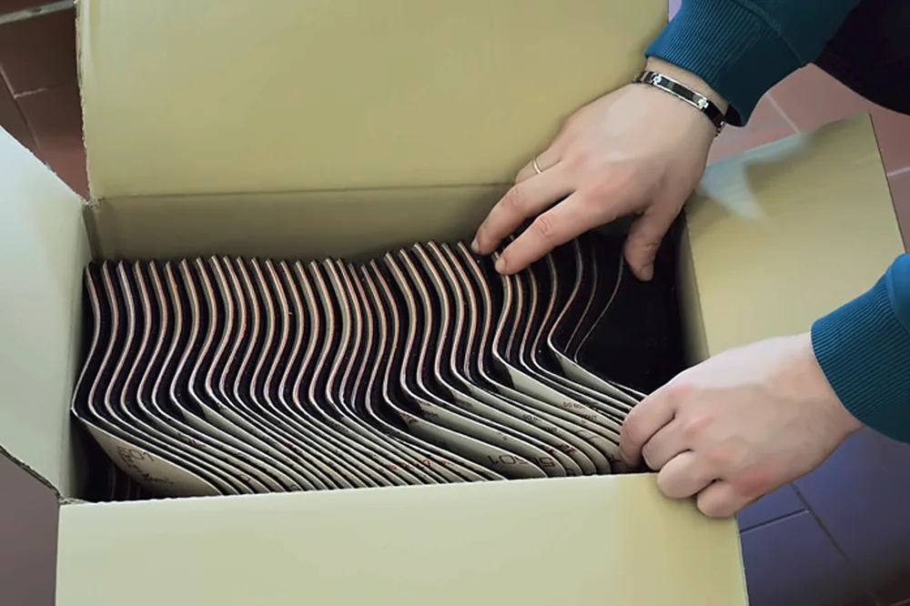
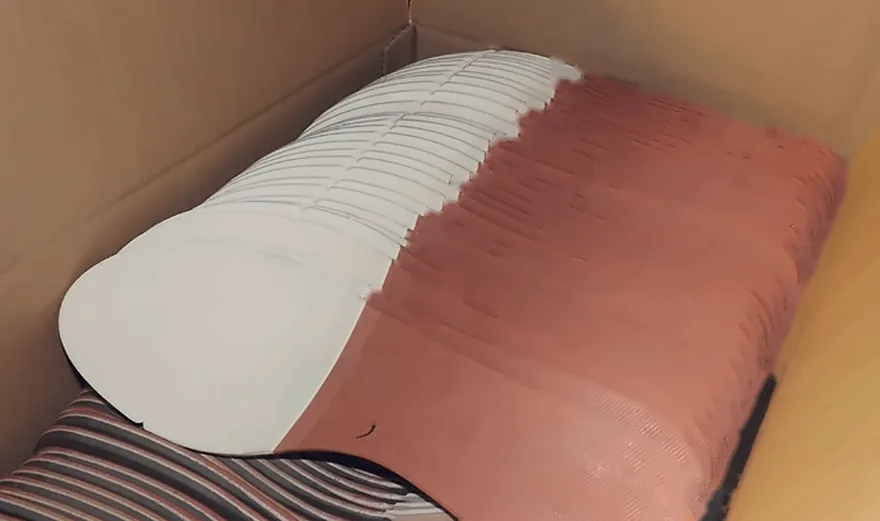
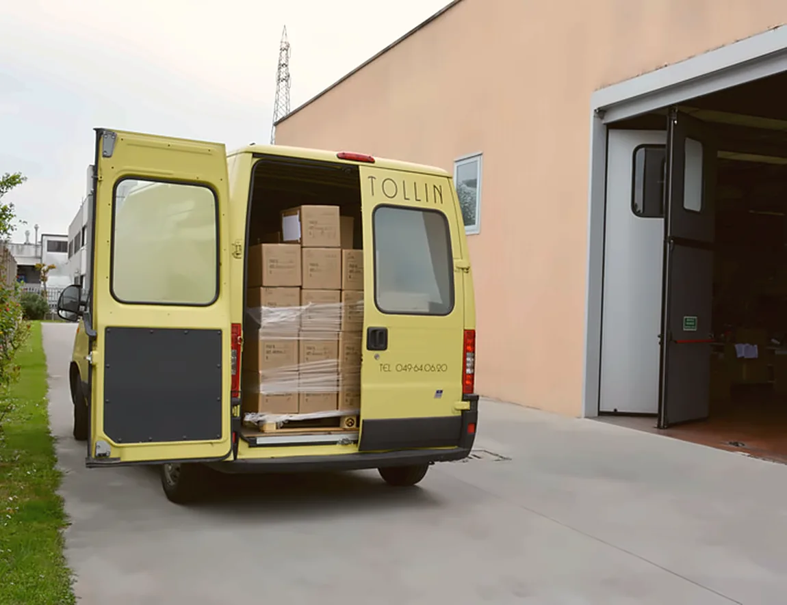

Sottopiedi per calzature

Da uomo, da donna e da bambino, per i calzaturifici. Li disegniamo sulla forma, li tagliamo e li cambriamo in via Irpinia 15. Siamo nati nel 1970, come piccola realtà a conduzione familiare.
Quattro reparti sotto lo stesso tetto
Dal disegno sulla forma alla scatola chiusa, ogni passaggio si fa in via Irpinia 15.

Studio modelleria
Modelli, prototipi e campioni con i programmi CAD/CAM per calzature.
Plotter Comelz CN
«La progettazione parte dalle caratteristiche della forma del modello, ponendo attenzione alla sagoma della parte inferiore della forma, alle sue curvature»

Lavorazione automatizzata
Oltre ai sottopiedi tagliamo suole, puntali, contrafforti e tallonette, su cellulosico accoppiato, cartone fibrato, pelle e cuoio.
Tranciatrice Comelz CM44S
«La tecnologia del taglio a punzone e della lama oscillante garantiscono alta produttività e flessibilità»

Piatto, poi garbato
Dalla trancia il sottopiede esce piatto. La pressa lo porta sulla curva della forma, con stampi diversi per ogni sagoma.
Pressa Comec SPM12
«Ogni sottopiede è garbato in modo progressivo in modo da evitare la formazione di grinze»

Supervisione
Poi l’imballo nelle scatole, per una consegna puntuale.
Controllo e imballo
«I prodotti sono controllati minuziosamente dal personale e dai titolari prima di essere consegnati ai clienti»

Cuoio, schiuma di lattice, pelle, gommapiuma, lana, tessuto sintetico e antibatterico
Sottopiedi da uomo, da donna e da bambino; per sandalo, con incastri a ragno; per bambino, in soffice lattice.
Una consegna puntuale, in tempi rapidi
049 640620Via Irpinia 15, Zona Artigianale
35020 Villatora di Saonara (PD)
